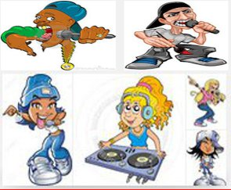
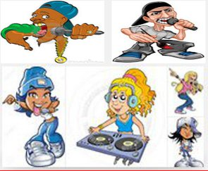

Welcome to MarmuseProductions
What the hell about me?
First of all I want everybody on earth to know that I am what is called a "Targeted Individual."
That's right, the government has been trying crush a dawg to dust for six years. Probably longer, but it took them a long time to get me in that right situation for the full press.
Why?
I've got reasons to think it's because of a few things.
I was on websites like "Abovetopsecret" pissing "superior" chumps off just by being intelligent enough to break down their bullshit. I didn't learn until later that those sites were filled with spying alphabets peices of shits.
One of them even made a screen name using my screen name to call for my death.
Soon after that, all hell broke loose in my life.
But I don't think that was the biggest reason I was put on the list...a reason I'm not going to discuss because it would make me look silly and looney to try to write about how silly and looney these jokers in the government are.
But I will say this: those cowardly sumbitches are worried about everything...myths, rumors, what people think...like some kind of murderous serial killer who knows that one day he is going to have to pay the piper, but is terrified of what he has sewn in the world. So he spies, or try to spy on everything and everybody, tries to kill everything or everybody who might even hint of being a threat. So everything and everybody who don't literally bow down to them and accept everything they say and do like it's some kind of holy writ needs to be neutralized or eliminated.
Besides, trying to punish me for my attitude, I think I was targeted because of my anti--war music and books. I've had computers taken from me, book manuscripts taken, been framed and thrown in jail, harrassed nearly to death by cops and snitches--which speaking of those soullous worms...the Black community is swarmed with those 2 dollars slaves and they will torture their own mothers to death if told to do so by their masters. Anybody ever wonder why whenever the police and the Feds start to get heat for their attrocities, all of a sudden people start shooting and dying everywhere in the Black Community?
The fact is only a small fraction of people can point a gun at somebody and pull the trigger in the first place--even to save their own lives. The ones that do are usually chumps and sychopants doing the bidding of pyschopaths and people with authority.
People don't know a fraction of what I do about what the government does to it's citizens(not just Blacks) at every single oppurtunity that presents itself. So they think somebody like me is just bitter or angry over the petty shit they get bitter and angry over.
But the only difference between me and anybody else in the world is that you can't tell me that you're blowing the head off of children, dropping napalm on people, destroying first world Nations and driving millions into the destitution and hunger of refugee camps because you're saving me from some guy living all the way on the other side of the world. Let the mf kill me if it has to be all that. Especially from some government who is trying to kill me itself just because some fat, spying freak didn't like something I said and wrote...a government who drives innocent citizens to suicide for fun, spite, or just because they are free spirits, or honest people who stupidly believe that it is a good idea to try to expose any kind of corruption.
Some real monster over us and everybody else is going to find that out soon enough just like we Targets are now. We Targets are just practise because these monsters over us are always thinking hundreds if not thousands of years ahead. And the goal never changes. The way they have this world is just an unaceptable abomination, but people accept it and soon they aren't going to be able to do anything but worship it or die...and not easy either because their strongest traits are rage, pettiness and vengefulness against anything who slights their godship. Man has been slighting and fighting them for thousands of years and they have been raging and biting at the bit for thousands of years to punish us for it.
That's why when ever they can do things like blacklist people from work and then deny a Mother and her children food stamps, because she criticises them, they take it. But again that's just some small measure of the vengeance, they wreak on the most vulernable and voiceless of us, here and there. Soon they are going to be wide open with it on everybody. People see it. But as long as it's happening to someone else they want to keep their head down and believe that some 2 year old in Syria is supposed to be dead because Syrians or North Korean, or Afgans want to live a different way. That their way of living threatens a nuclear power ten thousands miles from them.
There was a reason for me writing the above besides just venting.
The reason is, I wanted give some background of why I only want to work with people like me. Anti- abortion Communists, Leftists, Targets, Off-gridders, Anti-abortionists, Dissenters, the homeless and Conscious people who are able to emphathize with others.
The rest of Y'all... Peace be still. Don't contact me. If the system aint at war with you that means you aint doing jack but aiding and abetting the most criminal and ruthless enterprise in the annuals of time.
You got a right to your choice. Christ said he was going to seperate, not try to tear anything down because everybody has a choice on how they want to exist.
I just don't have a right to mine according to the empire. Even though I'm not trying to do anything to that beast. Karma and God already got that.
I'm just making my stand and making it clear that shit aint for me and I don't want none of the spoils. Those monsters running the government can go to hell.
That's how I feel and that's how I'll always feel.
I just have to find a way to live with the consequences.
If you know your heart, know the risk, and want to be a part of something legal, peaceful, and determinedly, decent, contact me if you have talent. A know a lot of y'all got all the talent in the world.
I'm a dude who writes lyrics like a machine. If the empires allows, I just want to try to do something in this world for the people who are just like me.
I need Rappers and Singers of any genre, any Race, any Ethicity. Plus at least one Producer or Musician.
Even if you don't have talent, you can be a part of this by signing on to be promoters of the Artist's projects.
Everybody will be treated fair and get paid whatever it is that is agreed upon in writing.
 
